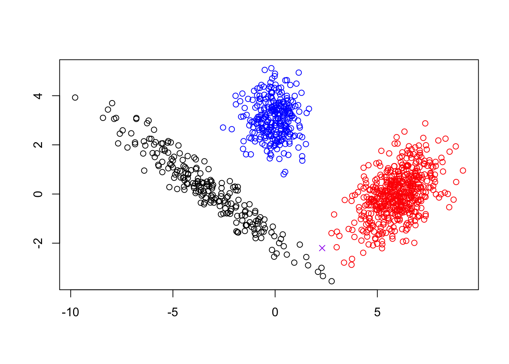

7.2 Minimizing clustering loss functions
For any of the three preceding methods, we want to find an optimal partitioning and/or set of centers which minimize their associated loss. One naive approach would be to search or all possible partitioning of our data into \(k\) clusters (\(k\)-means) or all possible choices of \(k\) center points from our data, but one can imagine how computationally unfeasible this approach becomes for even moderate amounts of data. Instead, we will turn to greedy, iterative algorithms which converge to (locally) optimal solutions. The standard approach for \(k\)-means is based on Lloyd’s algorithm with a special initialization to avoid convergence to local minima. Later versions of this text will discuss greedy approaches for \(k\)-center and the standard partitioning around medians (PAM) algorithm for \(k\)-medoids.
7.2.1 Lloyd’s Algorithm for \(k\)-Means
- Initialize: Choose initial centers randomly from the data.
- Cluster Assignment: Assign each point to the nearest center.
- Center Update: Recompute cluster centers based on current assignments.
- Repeat steps 2-3 until convergence.
:::{.example name=“Lloyd’s algorithm and Iris Data} In this example, we’ll consider the three dimensional iris data. For visualization, we’ll plot the first two PC. Centers will be outlined in black.
 :::
7.2.2 Strengths and Weaknesses
The advantages and disadvantages of center-based clustering algorithms can be separated into two main categories: computational and geometric. Some potential issues can be mitigated such as outliers and scale imbalance In theory, the worst case for convergence takes \(\propto N^{k+1}\) iterations, but Lloyd’s algorithm is typically very fast in practice. Most implementations, allow the user to set a maximum number of iterations and converge to approximate suboptimal solutions if the maximum number of iterations is reached. PAM and greedy \(k\)-center algorithms are typically much, much slower in practice.
Centers can be interpreted as representative prototypes of each cluster allowing new data to be merged into cluster with nearest center. However, sample averages in \(k\)-means may not resemble actual data points whereas centers in \(k\)-center and \(k\)-medoids are restricted to observations. Furthermore, clusters are based off interpretable notion of (Euclidean) distance so that points in a cluster are closer to one another than to points in other clusters.
- Requires choosing \(K\) in advance (more on this shortly)
- No connection between \(K\)-means cluster solution and \((K+1)\)-means cluster solutions
- Need to rerun for different values of \(K\)
- Convergence is dependent on initial condition

7.2.3 Addressing limitations (computational)
- Avoiding convergence to poor local optimal
- Run many different ICs to convergence and pick best solution based on \(T_K\) and/or
- Use better initialization, e.g. \(k\)-means++, which is default in sklearn
- Choosing \(K\)
- Many different methods which tend to give (slightly) different results
- Direct methods: optimize a target score - Elbow, sihouette diagnostics
- Testing methods: comparison to null model
- Gap Statistic

7.2.3.1 Elbow plot
- The inertia will decrease as the number of clusters increases.
- To choose \(K\) we find the inertia as a function of the number of clusters.
7.2.3.3 Gap Statistic
Due to Tibshirani et al., (JRSS-B, 2001).
Idea: For a particular choice of K clusters
Compare the total within cluster variation to the expected within-cluster variation under the assumption that the data have no obvious clustering (i.e., randomly distributed).
Can be used to select an optimal number of clusters or
As evidence that there is no clustering structure
7.2.3.4 Gap Statistic: Algorithm
Cluster the data at varying number of total clusters \(K\). Let \(T_K\) be the total within-cluster sum of squared distances.
Generate \(B\) reference data sets of size \(N\), with the simulated values of variable \(j\) uniformly generated over the range of the observed variable \(j\) . Typically \(B = 500.\)
For each generated data set \(b=1,\dots, B\) perform the clustering for each \(K\). Compute the total within-cluster sum of squared distances \(T_K^{(b)}\).
Compute the Gap statistic \[Gap(K) = \bar{w} - \log (T_K), \qquad \bar{w} = \frac{1}{B} \sum_{b=1}^B \log(T_K^{(b)})\]
Compute the sample variance \[var(K) = \frac{1}{B-1}\sum_{b=1}^B \left(\log(T_K^{(b)}) - \bar{w}\right)^2,\] and define \(s_K = \sqrt{var(K)(1+1/B)}\)
Finally, choose the number of clusters as the smallest K such that \[Gap(K) \ge Gap(K + 1) − s_{K+1}\] #### Silhouette plots and coefficients
For a given clustering, we would like to determine how well each sample is clustered.
\[\begin{split} a_i &= \text{avg. dissimilarity of } \vec{x}_i \text{with all other samples in same cluster} \\ b_i &= \text{avg. dissimilarity of } \vec{x}_i \text{ with samples }\text{ in } the \text{ } closest \text{ cluster} \end{split}\]
We then define \[s_i = \frac{b_i - a_i}{\max\{a_i,b_i\}} \in (-1,1)\] as the silhouette for \(\vec{x}_i.\)
- Observations with \(s_i \approx 1\) are well clustered
- Observations with \(s_i \approx 0\) are between clusters
- Observations with \(s_i < 0\) are probably in wrong cluster
We can use any dissimilarity!
Can use silhouettes as diagnostics of any method!
A great clustering will have high silhouettes for all samples.
To compare different values of \(K\) (and different methods), we can compute the average silhouette \[S_K = \frac{1}{N}\sum_{i=1}^N s_i\] over a range of values of \(K\) and choose the \(K\) which maximizes \(S_K\).